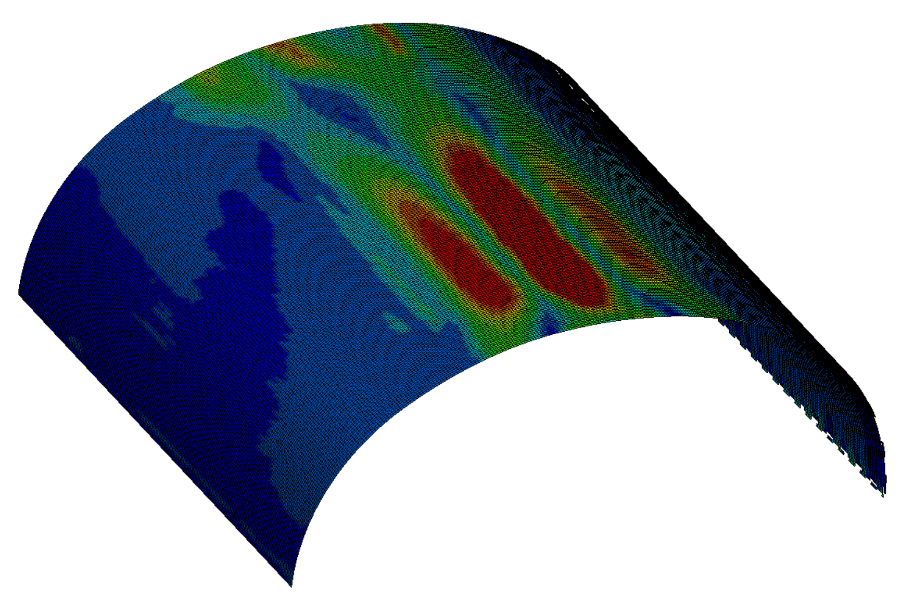
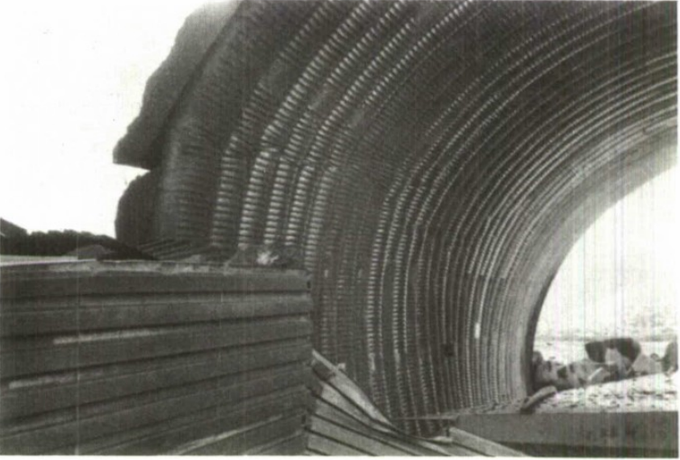
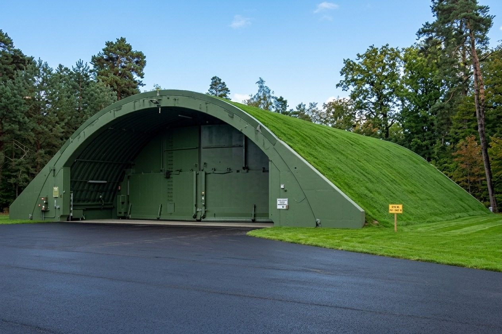
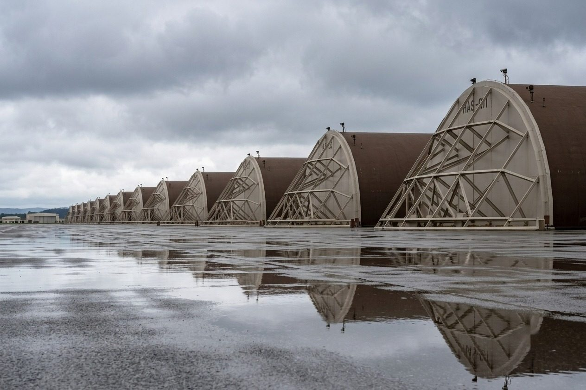

01／一般土木工程 · B381

381 × 140 mm
俗稱 380×140 大波形，只有主波形，不具 Wonder Arch 的小型補強波紋。
REXSTEEL 一般波形鋼板主力產品REXSTEEL 以 381×140 為一般波形鋼板主力產品，用於涵洞、生態廊道等土木結構；本公司不將其用作機堡防剝落襯板。
不可替代美軍／NATO 指定防剝落襯板
禁止用於機堡 — REXSTEEL 應用方針
從襯板、SH DOOR 防爆門供應到 HAS·HAAS 整體設計。
REXSTEEL 以單一窗口提供鋼拱襯板、防爆門、工程技術及整體設計。
B381 一般大波形鋼板、Wonder Arch 雙波形及 400×200 Steel Rolled Arch Liner 是三種不同斷面；僅增加鋼板厚度，不代表符合軍用防剝落襯板規範。
俗稱 380×140 大波形，只有主波形，不具 Wonder Arch 的小型補強波紋。
REXSTEEL 一般波形鋼板主力產品REXSTEEL 以 381×140 為一般波形鋼板主力產品，用於涵洞、生態廊道等土木結構；本公司不將其用作機堡防剝落襯板。
不可替代美軍／NATO 指定防剝落襯板
禁止用於機堡 — REXSTEEL 應用方針

適用美軍／NATO 專案規定之產品
依各專案規範及核准條件適用
Wonder Arch 鋼拱襯板
大波形結合小型補強波紋的雙波形斷面。
TP 15 §8.1：2-ft 正弦波形＝約 610 mm
Double Corrugated Steel Spall Liner
雙波形 · 鋼板厚度 3.2 mm
約 610 mm 主波距＋雙波形＋3.2 mm
專案規範：Section 05 30 00 §1.3 · §2.1.1

適用美軍／NATO 專案規定之產品
依各專案規範及核准條件適用
Steel Rolled Arch Liner · 輥軋鋼拱襯板
不具小型補強波紋的單一深波形襯板。
Steel Rolled Arch Liner
單一深波形 · 5 mm 級鋼板
6 GA 須確認契約對母材厚度的定義
斷面、厚度及接合須符合專案要求
詳細規格於技術協議時提供
| 項目 | 610 × 355 · 雙波形 | 400 × 200 · 單一深波形 |
|---|---|---|
| 產品名稱 | Double-Wave Steel Arch Liner | Steel Rolled Arch Liner |
| 供應厚度 | 3.2 / 4.0 / 4.5 mm | 3 / 4 / 5 / 6 / 7 / 8 mm |
| 適用規範 | 已確認專案規範：雙波形、至少 3.2 mm | 已確認專案要求：5 mm 級，另確認 6 GA 條件 |
| 材質 · 表面 | 依專案規範選定素材、表面處理及電著塗裝 | 依專案規範選定結構鋼及表面處理 |
雙波形是對抑制混凝土剝落碎片飛散具有重大影響的關鍵設計要素。主波形與小型補強波紋影響局部挫屈及變形，須檢核斷面、厚度、接合、錨定與混凝土整體系統；僅增加 B381 厚度，不能取代指定襯板。
已確認專案規範中， Section 05 30 00 — Steel Arch Liner §1.3 要求雙波形，§2.1.1 要求至少 3.2 mm；斷面及接合變更須依核准條件辦理。
HAS 開發與試驗背景說明 2-ft 正弦波形（609.6 mm）；該條文本身未規定 355 mm 波深、小型補強波紋、3.2 mm 厚度或 REXSTEEL 產品認證。
區分 TP 15 §1.5 所述 DESR 6055.09、TP 26 相關設計審查體系、UFC 3-340-01、UFC 3-340-02 與產品規範。實際適用以合約最終規範、圖說及核准條件為準。
參考：TP 15 Rev.5（2026.07）及已檢視專案規範。公開 UFGS 05 30 00 標題為 Steel Decks，為不同文件。上述說明不代表美軍／NATO 通用產品認證，亦非相同條件下的性能倍數比較。B381 不用於機堡為 REXSTEEL 應用方針。
嶺南大學、慶星大學研究團隊以 LS-DYNA 分析外部爆炸及侵徹後爆炸的結構反應，展示實際分析圖與主要數值。



影片為宣傳剪輯；下方數值以提交報告的特定分析條件及評估時刻為準。
外部爆炸分析 — 報告結論為：在所採分析條件及評估方法範圍內確認結構安全性。
侵徹後爆炸分析 — 多層防護結構發生局部降伏及塑性變形；報告指出分析結束前整體拱形維持，且未觀察到明顯內部碎片飛散。
此為數值分析，並非實體爆炸試驗認證。上述觀察不足以判定碎片速度、深度及錐角的定量標準符合性，也未直接驗證新 C-130 大型 HAS 或 4.5 mm 擴大設計，須另行分析。
藉由美國空軍及國防核能局歷史試驗，了解機堡系統開發背景；須區分試驗年代、結構形式及結果。


Aircraft Shelter Explosives Quantity-Distance Evaluation
AD0886769 · AFWL-TR-71-65
Jon M. Jorgensen · 美國空軍武器實驗室。評估標準雙波形拱形機堡內部爆炸對鄰近機堡的影響。
結果適用範圍 爆源機堡遭破壞，鄰近機堡有不同程度損傷；照片展示該試驗的爆炸瞬間及試後狀態。
High Explosive Testing of Hardened Aircraft Shelters
ADP001768 · DISTANT RUNNER
Ronald R. Bousek · 美國空軍／國防核能局。透過第三代機堡全尺度外部及內部爆炸試驗，評估爆炸物安全間距與結構反應。
結果適用範圍 報告同時記錄外部爆炸防護效果及內部爆炸破壞行為；部分內部試驗中機堡與飛機遭破壞，並不將其介紹為飛機投彈試驗。
照片取自原報告，屬歷史試體紀錄，不代表現行 REXSTEEL 產品獲美軍認證，亦非所有爆炸條件的安全保證。1971 年報告首頁載有 1977 年公開核准標示。
報導引述消息人士，針對台灣規劃的雙波浪鋼材襯裡提出以下質疑。
台灣規劃興建的「雙波浪鋼材襯裡」並非美軍規範材質，且厚度僅3mm台灣規劃興建的雙波浪鋼材襯裡並非符合美軍規範的材質，厚度也僅為3 mm。
來源：菱傳媒 · 2024.04.25
區分鋼構機棚與混凝土覆蓋 HAS。Wonder Arch 610×355 襯板依專案檢討 3.2 / 4.0 / 4.5 mm 厚度選項。
主鋼構支撐大跨距空間，搭配內襯板、礦棉、外側檁條與外部裝甲板，以因應防護要求。
寬 50 m · 規劃門洞 44×14 m圖片集中的空間規劃範例；相較 C-130J 外形，門洞名目餘裕左右各約 1.80 m、上方約 2.16 m。門框、設備及操作餘裕須另行詳細檢討。
整合規劃 Wonder Arch 襯板及混凝土覆蓋，分別檢核澆置中的臨時支撐與完成後的混凝土結構。
參考形式：約 21.6 m、25.0 m此為公開 TP 15 §8.1 的既有 HAS 寬度，非本公司 4.5 mm 產品允許最大跨距；HAAS 斷面及厚度亦須依專案規範另訂。
以 C-130J 翼展 40.41 m、高度 11.84 m 為基礎，自出入口及內部有效空間開始規劃的獨立擴大設計。
配合大型化的支撐與覆蓋設計不可沿用相同厚度及支撐點數直接放大 22 m 級 HAS；4.5 mm 適用範圍、混凝土厚度、基礎及門體須經整體結構與防護驗證決定。
HAS 為航空器防護，HAAS 考量戒備出擊待命；不能僅依縮寫決定襯板，須按任務、幾何、載重及核准規範選定。


寬 50 m、長 66 m、最高 23.5 m、規劃門洞 44×14 m。為空間及構成檢討的 3D 模型，非已確定鋼構、門、接合或防護性能的設計。


以混凝土拱及內部 Wonder Arch 襯板構成的大型 HAS 空間規劃；飛機為參考 C-130 級外形尺寸的簡化模型，門體為開啟狀態。非實際工程，亦非已核准結構或防護設計。








依需求協議襯板、防爆門、結構及爆炸分析、施工支援與整體設計範圍。
整體設計另行報價；REXSTEEL 與專業設計網絡共同執行 HAS·HAAS 設計。各專業範圍、EOR、簽章及當地審批許可責任須載明於專案契約。
與 SH DOOR TECH 共同檢討門洞、門框、軌道、驅動系統及襯板與混凝土施工順序；門型及防護規格依專案要求決定。
查看 SH DOOR TECH 簡介 ↗門體結構、桁架、軌道、門框 · 現場組裝及吊裝
依契約範圍提供滾輪、驅動部、控制盤及人員出入門
製作圖、材料、焊接及檢驗程序 · 襯板介面協調
製造檢查 · 安裝 · 試運轉 · 操作人員訓練
公開型錄及技術參考資料可直接查閱；詳細設計及分析資料請洽詢。
提供設施幾何及供應需求後，可協助說明產品、設計及施工支援。詳細技術資料於簽署保密協議後提供。
歡迎來信索取保密協議範圍內的技術及供應範圍資料。